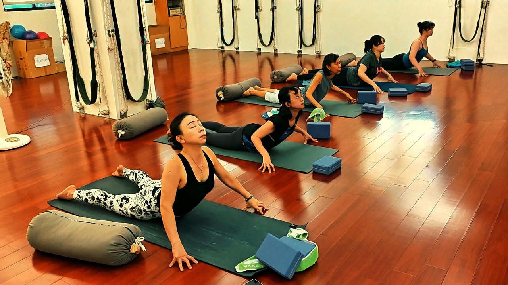

骨盆前傾＝小腹凸？先看懂再收

明明不算胖，小腹卻總是凸一塊；站久了腰又痠。你努力縮小腹、拚命做仰臥起坐，卻沒什麼用。很多時候，這不是脂肪的問題——是骨盆前傾。
什麼是骨盆前傾？
把骨盆想成一個裝水的盆子。正常時盆口朝前、水不會灑出來；骨盆前傾就是盆子往前倒，水從前面「灑」出來——腰往前凹、屁股往後翹、肚子被推到前面，看起來就像小腹凸。
為什麼會前傾？常見的是久坐族：長期坐著，髖部前側（髂腰肌）變緊、把骨盆往前拉，同時核心與臀部變弱、拉不住。一前一後失衡，骨盆就被拉成前傾的姿勢。
為什麼縮小腹沒用
小腹凸不是「肚子出力不夠」，而是「骨盆的角度跑掉了」。角度不調回來，再怎麼縮、再多仰臥起坐，凸的地方還是凸。
要收小腹，先把骨盆帶回「中立」
真正的關鍵，是把前傾的骨盆帶回中立位置——這需要兩件事：把緊的髖前側鬆開，同時喚醒睡著的核心與臀部。當骨盆回正，腰的壓力減少，被推出去的小腹自然收回來，腰痠也會跟著改善。
壁繩在這裡很好用：它給你穩定的支撐，讓你安全地伸展緊縮的髖前側；也能在有依靠的狀態下，慢慢練到平常叫不動的臀部和核心。不用先很有力、很柔軟，繩子會幫你借力，找到「原來是這裡出力」的感覺。

今天就能感覺的一件小事
靠牆站，腳跟離牆一個拳頭，讓後腦、上背、屁股輕貼牆。這時把腰後方那個「空洞」輕輕往牆壓一點（像要把肚臍往脊椎收），感覺一下骨盆回正、小腹被收進去的樣子。這就是「中立骨盆」的感覺——記住它，之後練習就有方向。
本文是體態與姿勢的一般衛教與練習分享，不是醫療診斷或治療。若有疼痛或特殊病史，請先諮詢醫師。